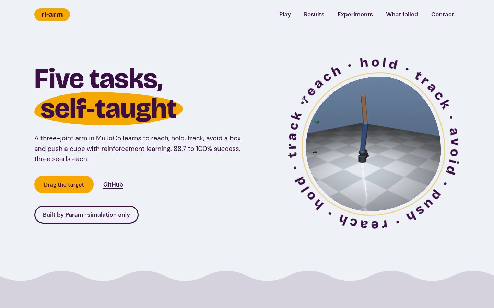
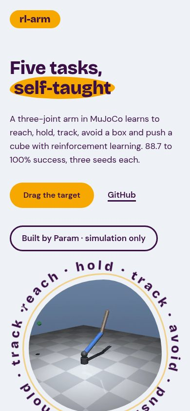
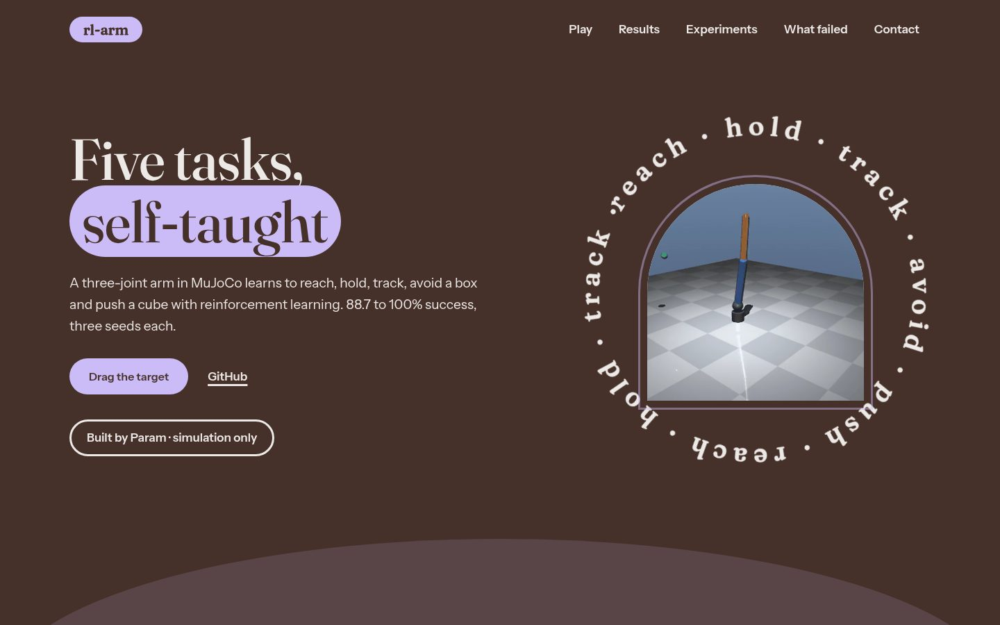
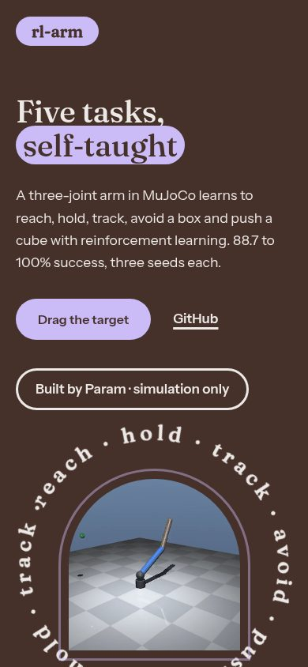

Same copy and the same numbers in every version, only the design differs. Open each one, scroll all the way down, then tell me which to take forward (or which parts to mix).
Dark green-black with bone text, Work Sans. The page is built from working fragments: a demo stage, a task ledger that drives the clip and numbers, an experiment sheet you flip through, a run-it dialog with a copy button.
Warm black and gold, Chivo. RL-ARM runs the full width of the first screen, then the page goes quiet: a narrow text column, poster-sized task names you hover, figure lines, a poster list, and one giant CLONE button.
Ultramarine, black, yellow and pink fields butted together, Hanken Grotesk. Each task is its own colour chapter with a folder tab, results are bars standing on the edge, and the footer builds the name out of coloured blocks.
Near-black with one crimson button, Sentient serif. The arm is the only lit object. Big task names act as an index with a sticky preview, a learned-versus-exact card pair, and a quiet closing sentence.
Jet black, cerulean, neon rose; circles. One dominant ground, the other two colours as soft tints and small accents. Live demo: the trained policy runs in your browser.
Aubergine, marigold, ice silver; blobs and waves. One dominant ground, the other two colours as soft tints and small accents. Live demo: the trained policy runs in your browser.


Mocha, lavender, platinum; arches. One dominant ground, the other two colours as soft tints and small accents. Live demo: the trained policy runs in your browser.

